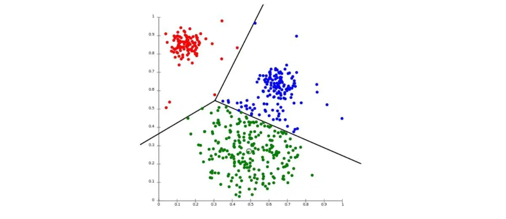
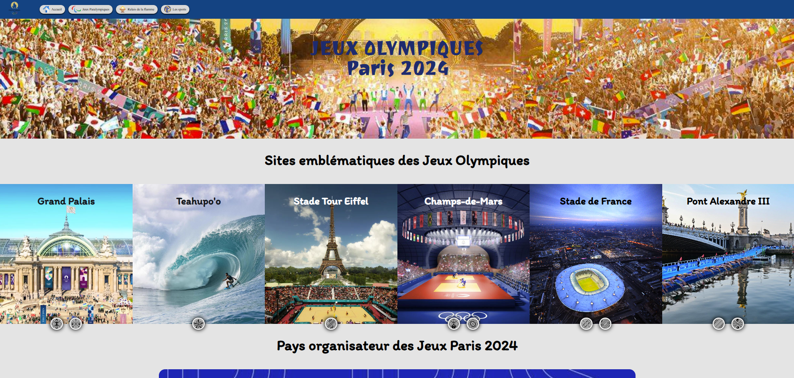

Saturne
Saturne est une application de génération de code, orientée sur la création d'interfaces.
Elle vient du projet créé pour le concours des trophées NSI, sur lequel j'ai continué le développement.
le code est découpé entre des fichiers d'interfaces, des fichiers de traitement des données,
et des fichiers de gestion de fichiers ressources.
L'application est passée par une phase de réflexion/conception, puis par une phase de développement, et enfin
par une phase de débogage/polissage
Technologies : Python, JSON
Compétences : Développement logiciel, développement python, travail d'équipe, gestion de projet

EllaDanse
Développement d'une application de gestion d'un club de danse.
Nous avons développé en équipe la partie sur la gestion des membres dans cette application.
Nous avons étudié le besoin client, fait l'organigramme des tâches ainsi que la matrice RACI et le diagramme de Gantt.
Nous avons enfin développé l'application en JAVA avec la librairie JavaFX.
Note : l'application étant encore en développement, elle n'est pas disponible encore sur github
Technologies : JAVA, JavaFX
Compétences : Développement Java, développement logiciel, travail en équipe, gestion de projets

KNN
Développement de l'algorithme des K-Nearest-Neighbors et du K-means. J'ai développé ces deux algorithmes dans le cadre d'un projet de cours. Puis j'ai aussi créé un autre algorithme sur la base du K-means pour en améliorer ses performances. Pour tester les algorithmes, j'ai utilisé la libraire scikit-learn.
Technologies : Python, librairie scikit-learn
Compétences : Machine learning, développement python, travail en équipe, optimisation d'algorithmes

source de l'image : bombaySoftware.com
Base de données des élèves de l'IUT
Implémentation d'une base de données contenant les postulants et les élèves de l'IUT pour le DUT informatique.
Nous avons, en binôme, créés le script de création de la base, que nous avons ensuite peuplé.
l'objectif a aussi été dans un second temps de réaliser des études statistiques sur cette base.
Nous avons utilisé python pour normaliser les données et réaliser les études statistiques.
Technologies : SQL, python
Compétences : SQL, Développement Python, travail en équipe
Site Web des JO
Nous avons réalisé en équipe, un site sur le thème des JO de Paris. Nous avons étudié le besoin client, avons réalisé le maquettage du site, puis son développement. Le site présente la page d'accueil, la natation, et la discipline du 400m.
Technologies : HTML5, CSS3, Javascript
Compétences : Développement web, travail d'équipe
